Van Gogh
15 approved faces, including green Triple Shoots for 3 bamboo, green Garden Rhythm for 2 bamboo, Night Cafe for 2 of characters, Almond Branches for 3, Cypress Fields for 4, Blazing Dawn for East and Wind Ribbons for North. Choose Options → Tile face → Van Gogh in the game. The remaining tiles use Classic artwork.
Approved artwork
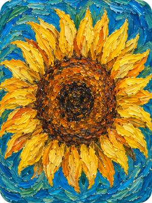
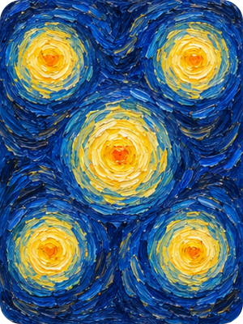
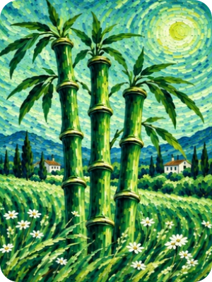
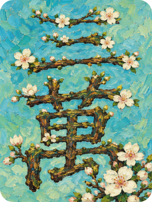
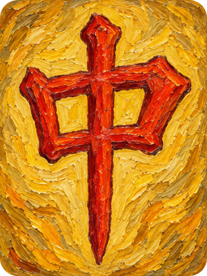
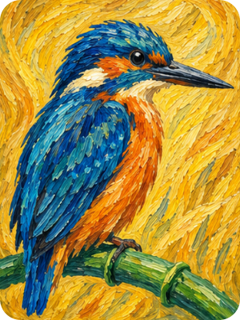
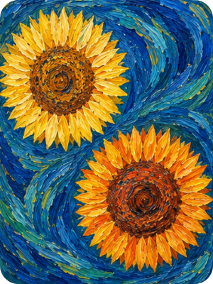
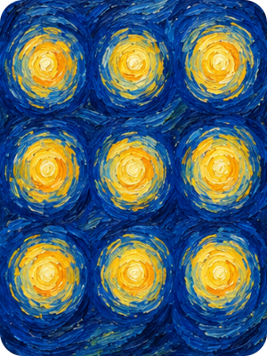
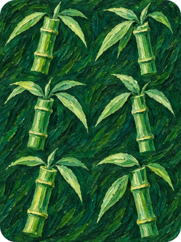
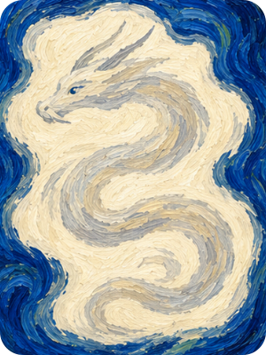
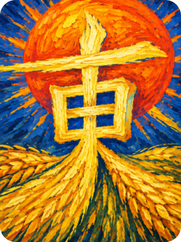


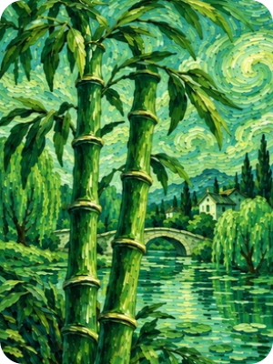
A mixed hand


The last two tiles use Classic artwork. East wind K is excluded. White dragon L keeps its pale painted dragon under the normal dora ring and foil sheen.
Earlier selected art is preserved in lossless PNG crops. Garden Rhythm 2 bamboo and Triple Shoots 3 bamboo use high-quality, web-optimized crops of their approved green studies; their source and crop provenance are documented. Export manifest